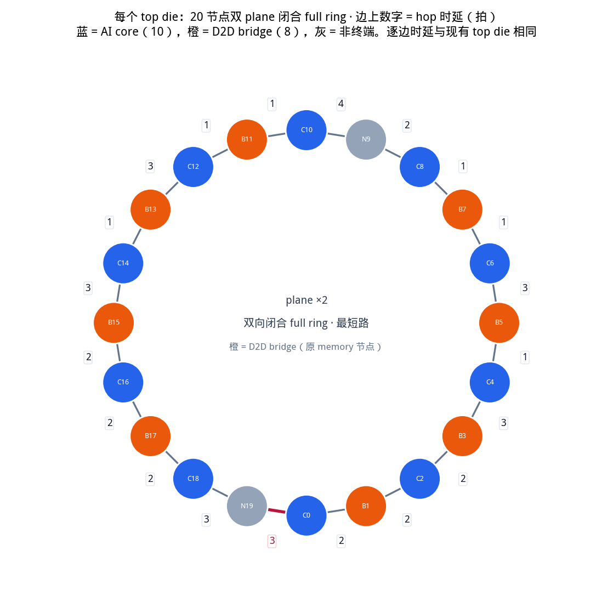
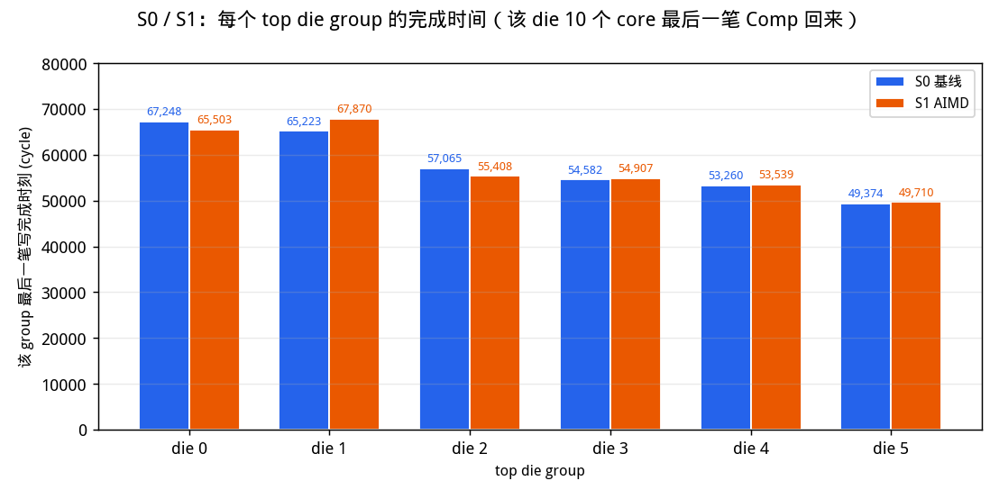

六个 top die 各是现有的 20 节点双向 full ring × 2 plane （逐边 hop 时延与单环报告相同；原 memory 节点改为 D2D bridge； 数据通路 knobs 与现有 top die 对齐：12+8 上环队列、per-dir/per-vc 端口、 two-write leave、I-tag reserve）。 一个 bottom die：96 个 HA、6 横 + 8 纵 half ring， 横环 4 cycle / 纵环 6 cycle / 挂接点转向 5 cycle。 D2D landing 在 bottom die 上有两个独立接口（接横环、接所在列纵环）， 并用 HPCA'22 SWAP 与有界落地 buffer 解交叉死锁。 带宽口径为瞬时带宽，写带宽单位为 flit/cycle。 workload：burst 128 B、stride 4096 B、 tiling_size 64 KB × 4 tile / core （每核 2048 笔 WriteNoSnp，共 122,880 笔）。 地址按 128 B 交织到 96 个 HA，每核覆盖全部 HA （每核打到同一 HA 的次数 21–22）。 每 core outstanding = 128。 每个 HA 跟踪表 512 项，满了走请求 retry （RetryAck → PCrdGrant → 重发 REQ），不是源端控速。
下面两张表是本仿真实际用的硬件 setup。
Top die 的几何、节点角色和逐边 hop 时延沿用现有 20 节点环
（report_ring2_write_fairness.html）；
差别只是原来的 8 个 memory 节点在这里改叫 D2D bridge，
写的 completer 全部在 bottom die。

| 项目 | 取值 | 说明 |
|---|---|---|
| 节点数 / plane 数 | 20 / 2 | 两个独立的双向闭合 full ring，共用同一套几何。与现有 top die 相同；堆叠里每个 die 仍是设计上的双 plane |
| AI core | 10 个：C0, C2, C4, C6, C8, C10, C12, C14, C16, C18 | 写发起方（CHI RN）。六个 die 共 60 个 |
| D2D bridge | 8 个：B1, B3, B5, B7, B11, B13, B15, B17 | 现有 top die 上的 memory 节点，这里改为下到 bottom die 的桥。本身不发起、不完成写 |
| 非终端节点 | N9, N19 | 在环上转发，既不是 core 也不是 bridge |
| 路由 | 最短路（链路时延之和；时延平局再比跳数，再平局 CW） | 与现有 top die 相同。出 die 的那一跳由目的 HA 绑定的 bridge 决定，不是在 top 环上选 memory |
| plane 选择 | least_occupied | 两个 plane 之间做负载均衡 |
| 每 core outstanding | 128 | 同时在飞的写事务上限：从 REQ 上环占到 Comp 回来。最长无拥塞写 RTT 是 413 cycle |
| CHI VC | REQ / RSP / DAT | REQ、RSP、DAT 三条独立 VC，各自独立信用。每条有向边每拍可同时走 1 REQ + 1 RSP + 1 DAT |
| hop 容量（每 die） | 240 flit/cycle | 20 节点 × 2 方向 × 2 plane × 3 VC，σ=1。六个 die 合计 1440 flit/cycle；top 有向边 480（单 VC） |
| 端口 | per_dir + per_vc：每 (node, plane, dir, VC) 一个上环口；two_write_leave：目的站每个来向可同时下一拍 | 与现有 top die 相同。转向仍每拍一个 tap |
| 上环队列 | 共享 FIFO 12 / (node, plane, VC)，再按方向拆 8 | shared_inj；REQ 被 outstanding 卡住时不占队头，避免堵住同核的 WriteData |
| 下环队列深度 | 12 | 每 (node, plane, VC)；PE 每拍读 1 flit |
| I-tag | reserve，t_inj=16，hold=8 | reserve：只挡会盖住饥饿源出 hop 的上游注入；捐赠者让出后预留气泡 |
| E-tag 门限 t_xfer | 1 | 偏转这么多次后升 E-tag，可走预留下环槽 |
| HA 跟踪表 | 512 | 每个 HA 同时可收的请求数；满则 RetryAck → PCrdGrant → 重发 |
| 环内 hop 时延 | 2 / 2 / 2 / 3 / 1 / 3 / 1 / 1 / 2 / 4 / 1 / 1 / 3 / 1 / 3 / 2 / 2 / 2 / 3 / 3 cycle | 现有 top die 的 RING2_LINK_LATS：节点 i 与 (i+1) mod 20 之间；最后一项是 N19 ↔ C0。两个 plane 各一份，双向同值 |
| 无向边 | hop 时延（拍） | 备注 |
|---|---|---|
| C0 — B1 | 2 | |
| B1 — C2 | 2 | |
| C2 — B3 | 2 | |
| B3 — C4 | 3 | |
| C4 — B5 | 1 | |
| B5 — C6 | 3 | |
| C6 — B7 | 1 | |
| B7 — C8 | 1 | |
| C8 — N9 | 2 | |
| N9 — C10 | 4 | |
| C10 — B11 | 1 | |
| B11 — C12 | 1 | |
| C12 — B13 | 3 | |
| B13 — C14 | 1 | |
| C14 — B15 | 3 | |
| B15 — C16 | 2 | |
| C16 — B17 | 2 | |
| B17 — C18 | 2 | |
| C18 — N19 | 3 | |
| N19 — C0 | 3 | 闭合边（N19 ↔ C0） |

| 项目 | 取值 | 说明 |
|---|---|---|
| HA 阵列 | 96 个，12 行 × 8 列 | 写目的地（CHI completer）。没有 top-die HA |
| 挂接点 / bottom D2D | 48 | 按“2 横 × 4 列 = 8 个”一组，六个 top die 各一组。每个 D2D landing 两个独立接口：一个接该处横环，一个接所在列纵环。D2D→横、D2D→纵、横↔纵转向是三条 FIFO，只在出环 hop 上互斥 |
| D2D 链路 | 48 | 每 top die 8 条，双向，跨 SerDes。一条物理边，落地后横/纵口可同时上环 |
| bottom die NoC | 6 横 + 8 纵 half ring | half ring = 单向闭环，仍然回绕，但只走一个方向 |
| 纵环长度 | 18 | 12 个 HA + 6 个挂接点交替排列。最长 17 跳 |
| 有向链路 | 横 48 / 纵 144 / D2D 96 | 全芯片有向边 768 （含 top 480） |
| CHI 虚通道 | REQ / RSP / DAT | 与 top die 相同：REQ / RSP / DAT 三条链路独立 |
| SWAP（HPCA'22） | 开 | 横↔纵挂接点、D2D↔横、D2D↔纵：两拍 flit 互换，各走对方腾出的 hop，不进 FIFO、不加转向时延 |
| D2D 落地 buffer | 16 / (挂接点, 目标环, VC) | SWAP 和环 FIFO 都没进时的有界落地队列，下拍再参与 SWAP |
| 转向 / D2D FIFO 深度 | 64 / 128 | 唯一允许缓冲的地方；链路本身严格无缓冲 |
| HA 请求跟踪表 | 512 项 / HA | 满了走请求 retry：回 RetryAck，再发 PCrdGrant 后重传 REQ |
| 每笔写的 flit 数 | REQ 1、RSP 2、DAT 4 | WriteNoSnp 四段握手：REQ → DBIDResp → WriteData → Comp |
| workload | burst 128 B / stride 4096 B / tile 64 KB × 4（每核 2048 笔） | 二维密铺：每行 stride/burst 笔，tile/stride 行。地址按 burst 交织到 96 个 HA，每核均匀覆盖全部 HA |
| 链路 | 延迟 | 说明 |
|---|---|---|
| D2D 跨 die | 4 cycle | SerDes + 跨时钟域。落地不再另加转向时延 |
| bottom die 横环节点间 | 4 cycle | 挂接点 → 挂接点，单向 half ring |
| bottom die 纵环节点间 | 6 cycle | HA ↔ 挂接点，单向 half ring |
| 挂接点转向 | 5 cycle | 横环 ↔ 纵环，经转向 FIFO；D2D 落地走自己的横/纵接口，不和转向共队列 |
| D2D bottom 双接口 | 横环口 + 该列纵环口 | SerDes 仍是一条 D2D 边；落地后可同时上横环和上纵环 |



| 方案 | 批次是否排空 | 完成事务 | makespan | 达下界比例 （综合下界 / makespan） | E[CoVt] （越低越均） | 偏转次数 |
|---|---|---|---|---|---|---|
| S0 基线（无源端流控） | 完成 | 122,880 / 122,880 | 67,249 | 79.9% | 0.4205 | 212,523 |
| S1 源端 AIMD 控速 | 完成 | 122,880 / 122,880 | 67,871 | 79.2% | 0.4162 | 205,644 |
| top die group | S0 完成时刻 (cycle) | S1 完成时刻 (cycle) | S1 − S0 |
|---|---|---|---|
| die 0 | 67,248 | 65,503 | -1,745 |
| die 1 | 65,223 | 67,870 | +2,647 |
| die 2 | 57,065 | 55,408 | -1,657 |
| die 3 | 54,582 | 54,907 | +325 |
| die 4 | 53,260 | 53,539 | +279 |
| die 5 | 49,374 | 49,710 | +336 |
| 最晚 / 最早 | 67,248 / 49,374 | 67,870 / 49,710 | 组间完成时刻跨度 |
| 跨度 (max−min) | 17,874 | 18,160 | 越小表示各组差不多同时写完 |
达下界比例 = 综合下界 / makespan。 综合下界是链路、端口、织物切割、单事务时延四条下界的最大值 （本批次是纵环切割 53,760 cycle）。 100% 表示批次在这个最短可能时间里排空； S0 79.9% 表示实际用了下界的 1.25 倍时间， 写带宽也只有理想的同样比例。 全程完成量 Jain / max/min 在批次排空后必接近 1，不区分方案， 表里改列 E[CoVt]：每个 100-cycle 窗上六个 group 写带宽的变异系数，再对竞争窗口平均（越低越均）。 完成时间是该 die 10 个 core 最后一笔 Comp 回来的时刻。
怎么读曲线。 纵轴是该 top die 10 个 AI core 合计的 WriteData 上环速率 （flit/cycle，100 cycle 滑窗）。 黑色虚线是均衡流量下的理想每组写带宽 1.524 flit/cycle （122,880 笔 × 4 WriteData / 下界 53,760 cycle / 6 组）。 六条线若贴着这条虚线且缠在一起，才是瞬时也均衡； 贴着虚线但上下散开，就是长程均、短时轮流抢。 下面一张是每个窗的组间 CoVt，点线是 E[CoVt]， 虚线 0 是该窗六个 group 写带宽相同。 S0 的 E[CoVt] = 0.4205， S1 为 0.4162。
六个 top die 的几何完全相同（§0.1）。差别只在挂到 bottom 的哪 4 列、 走哪条近/远横环。每个 HA 绑定一个 D2D bridge：先确定去哪个 HA， 就确定了走哪个 bridge。

| 目标 HA 所在列 | 位置 | 用的 D2D bridge 节点号 | 该 bridge 在 8 个中的序号 | 组内位置 | 目标列 mod 4 | 落到哪条横环 | 符合 mod-4 规则 |
|---|---|---|---|---|---|---|---|
| 0 | 本 die 的 4 列 | 1 | 0 | 0 | 0 | 近端横环 H1 | 完成 |
| 1 | 本 die 的 4 列 | 3 | 1 | 1 | 1 | 近端横环 H1 | 完成 |
| 2 | 本 die 的 4 列 | 5 | 2 | 2 | 2 | 近端横环 H1 | 完成 |
| 3 | 本 die 的 4 列 | 7 | 3 | 3 | 3 | 近端横环 H1 | 完成 |
| 4 | 另一半的 4 列 | 11 | 4 | 0 | 0 | 远端横环 H0 | 完成 |
| 5 | 另一半的 4 列 | 13 | 5 | 1 | 1 | 远端横环 H0 | 完成 |
| 6 | 另一半的 4 列 | 15 | 6 | 2 | 2 | 远端横环 H0 | 完成 |
| 7 | 另一半的 4 列 | 17 | 7 | 3 | 3 | 远端横环 H0 | 完成 |
一个 top die 的 10 个 AI core 共用一条环、一组 8 个挂接点和 8 条 D2D， 是不可再往下调度的单位。下表是整次运行的合计（flit/cycle）；上图是同一指标的时间展开。 S0 每 die 平均 1.2182 flit/cycle， 六 die 合计 7.3090 flit/cycle。 均衡理想每组 1.524 flit/cycle （六组合计 9.143）。
| outstanding | 方案 | 排空 | 各 die 写吞吐 (flit/cycle) die 0 / 1 / 2 / 3 / 4 / 5 | 合计 flit/cycle | E[CoVt] （瞬时，越低越均） |
|---|---|---|---|---|---|
| 128 | S0 | 完成 | 1.2182 / 1.2182 / 1.2182 / 1.2182 / 1.2182 / 1.2182 | 7.3090 | 0.4205 |
| 128 | S1 | 完成 | 1.2070 / 1.2070 / 1.2070 / 1.2070 / 1.2070 / 1.2070 | 7.2420 | 0.4162 |
全程 Jain / max/min 是时间积分：每个 die 写完同样多的 WriteData， 排空后必为 1。瞬时（100-cycle 窗）六条线可以轮流高低。 因此用每个窗上六个 group 写带宽的变异系数 CoV = σ/μ，再对竞争窗口 （t ≤ t_fair）取平均，记为 E[CoVt]，作为瞬时均衡度 （越低越均，0 = 该窗六个 group 写带宽相同）。 S0 = 0.4205，S1 = 0.4162。 比较方案时固定 100 cycle 窗。
| 指标 | S0 | S1 | 含义 |
|---|---|---|---|
| E[CoVt]（瞬时均衡度） | 0.4205 | 0.4162 | 每个 100-cycle 窗上六个 group 写带宽的变异系数 (σ/μ)，再对竞争窗口平均。0 = 每个窗都均 |
| 窗内 CoV 中位数 / 最小 / 最大 | 0.3902 / 0.0451 / 1.2500 | 0.3997 / 0.0623 / 0.9492 | 竞争窗口内 |
| CoVt > 0.20 的窗占比 | 95.4% | 94.0% | 该窗六个 group 写带宽相对离散超过 20% 的时间比例 |
| Jain(E[x])（全程完成量） | 0.9774 | 0.9765 | 先对时间平均再算 Jain。批次排空时六个 die 完成量相同，必为 1 |
| 窗长 / 计入窗数 | 100 / 475 | 100 / 479 | 只计 t ≤ t_fair 且该窗总写带宽 > 0 |
| 均衡理想每组写带宽 | 1.524 flit/cycle | 1.524 flit/cycle | n_txn × WriteData / 综合下界 / 6 组 = 122,880 × 4 / 53,760 / 6。下界是纵环切割 53,760 cycle |
| 均衡理想六组合计 | 9.143 flit/cycle | 9.143 flit/cycle | 若跑到下界且组间均分，全芯片 WriteData 上环速率 |
完成时刻 = 该 die 10 个 AI core 最后一笔写的 Comp 回到发起核。 批次排空时 makespan 等于六个 group 完成时刻的最大值。 柱越齐，组间写完得越同时。
| top die group | S0 完成时刻 (cycle) | S1 完成时刻 (cycle) | S1 − S0 |
|---|---|---|---|
| die 0 | 67,248 | 65,503 | -1,745 |
| die 1 | 65,223 | 67,870 | +2,647 |
| die 2 | 57,065 | 55,408 | -1,657 |
| die 3 | 54,582 | 54,907 | +325 |
| die 4 | 53,260 | 53,539 | +279 |
| die 5 | 49,374 | 49,710 | +336 |
| 最晚 / 最早 | 67,248 / 49,374 | 67,870 / 49,710 | 组间完成时刻跨度 |
| 跨度 (max−min) | 17,874 | 18,160 | 越小表示各组差不多同时写完 |
CW = 顺时针（环下标 +1），CCW = 逆时针。次数含该核发出的 REQ 和 WriteData。 失败 = 环 slot 忙或 I-tag 挡住，不含 outstanding / AIMD 拒发。 成功 CW/CCW、失败 CW/CCW 是次数比（CW ÷ CCW）。
| die 0 AI core | 成功 CW | 成功 CCW | 成功 CW/CCW | 成功合计 | 失败 CW | 失败 CCW | 失败 CW/CCW | 失败合计 |
|---|---|---|---|---|---|---|---|---|
| core 0（环位 0） | 5,200 | 5,040 | 1.03 | 10,240 | 1,757 | 2,086 | 0.84 | 3,843 |
| core 2（环位 2） | 5,180 | 5,060 | 1.02 | 10,240 | 1,515 | 1,895 | 0.80 | 3,410 |
| core 4（环位 4） | 5,080 | 5,160 | 0.98 | 10,240 | 1,375 | 1,779 | 0.77 | 3,154 |
| core 6（环位 6） | 5,040 | 5,200 | 0.97 | 10,240 | 1,053 | 1,671 | 0.63 | 2,724 |
| core 8（环位 8） | 5,120 | 5,120 | 1.00 | 10,240 | 1,319 | 1,865 | 0.71 | 3,184 |
| core 10（环位 10） | 5,200 | 5,040 | 1.03 | 10,240 | 2,001 | 1,129 | 1.77 | 3,130 |
| core 12（环位 12） | 5,100 | 5,140 | 0.99 | 10,240 | 2,359 | 1,263 | 1.87 | 3,622 |
| core 14（环位 14） | 5,040 | 5,200 | 0.97 | 10,240 | 2,304 | 1,351 | 1.71 | 3,655 |
| core 16（环位 16） | 5,100 | 5,140 | 0.99 | 10,240 | 2,122 | 1,455 | 1.46 | 3,577 |
| core 18（环位 18） | 5,200 | 5,040 | 1.03 | 10,240 | 1,155 | 2,663 | 0.43 | 3,818 |
| die 0 合计 | 51,260 | 51,140 | 1.00 | 102,400 | 16,960 | 17,157 | 0.99 | 34,117 |
| die 0 AI core | 成功 CW | 成功 CCW | 成功 CW/CCW | 成功合计 | 失败 CW | 失败 CCW | 失败 CW/CCW | 失败合计 |
|---|---|---|---|---|---|---|---|---|
| core 0（环位 0） | 5,200 | 5,040 | 1.03 | 10,240 | 1,582 | 952 | 1.66 | 2,534 |
| core 2（环位 2） | 5,180 | 5,060 | 1.02 | 10,240 | 1,087 | 865 | 1.26 | 1,952 |
| core 4（环位 4） | 5,080 | 5,160 | 0.98 | 10,240 | 970 | 1,030 | 0.94 | 2,000 |
| core 6（环位 6） | 5,040 | 5,200 | 0.97 | 10,240 | 783 | 1,130 | 0.69 | 1,913 |
| core 8（环位 8） | 5,120 | 5,120 | 1.00 | 10,240 | 768 | 1,375 | 0.56 | 2,143 |
| core 10（环位 10） | 5,200 | 5,040 | 1.03 | 10,240 | 1,179 | 912 | 1.29 | 2,091 |
| core 12（环位 12） | 5,100 | 5,140 | 0.99 | 10,240 | 1,310 | 870 | 1.51 | 2,180 |
| core 14（环位 14） | 5,040 | 5,200 | 0.97 | 10,240 | 1,132 | 879 | 1.29 | 2,011 |
| core 16（环位 16） | 5,100 | 5,140 | 0.99 | 10,240 | 965 | 817 | 1.18 | 1,782 |
| core 18（环位 18） | 5,200 | 5,040 | 1.03 | 10,240 | 1,029 | 1,582 | 0.65 | 2,611 |
| die 0 合计 | 51,260 | 51,140 | 1.00 | 102,400 | 10,805 | 10,412 | 1.04 | 21,217 |
口径：每个 cycle 该织物上新发出的 hop 数（瞬时带宽，flit/cycle）。 曲线是 50 cycle 滑窗；表里的峰值是单周期最大。REQ / RSP / DAT 独立，所以 “单 VC 打满”= 峰值达到有向边数，“三 VC 打满”= 达到 3× 边数。

| 织物 | 有向边 | 单 VC 容量 flit/cycle | 三 VC 容量 flit/cycle | 瞬时峰值 flit/cycle | 峰值 / 单 VC | 峰值 / 三 VC | REQ 峰值 | RSP 峰值 | DAT 峰值 | 全程平均 （三 VC） |
|---|---|---|---|---|---|---|---|---|---|---|
| top die 环 | 480 | 480 | 1440 | 551 | 114.8% | 38.3% | 90.0% | 15.2% | 65.0% | 5.5% |
| D2D 对分 | 96 | 96 | 288 | 68 | 70.8% | 23.6% | 50.0% | 20.8% | 37.5% | 4.4% |
| bottom 横环 | 48 | 48 | 144 | 101 | 210.4% | 70.1% | 89.6% | 50.0% | 95.8% | 29.4% |
| bottom 纵环 | 144 | 144 | 432 | 284 | 197.2% | 65.7% | 86.1% | 82.6% | 83.3% | 27.8% |
| 织物 | 有向边 | 单 VC 容量 flit/cycle | 三 VC 容量 flit/cycle | 瞬时峰值 flit/cycle | 峰值 / 单 VC | 峰值 / 三 VC | REQ 峰值 | RSP 峰值 | DAT 峰值 | 全程平均 （三 VC） |
|---|---|---|---|---|---|---|---|---|---|---|
| top die 环 | 480 | 480 | 1440 | 529 | 110.2% | 36.7% | 82.7% | 15.4% | 71.7% | 5.4% |
| D2D 对分 | 96 | 96 | 288 | 55 | 57.3% | 19.1% | 50.0% | 20.8% | 41.7% | 4.4% |
| bottom 横环 | 48 | 48 | 144 | 95 | 197.9% | 66.0% | 83.3% | 50.0% | 97.9% | 29.1% |
| bottom 纵环 | 144 | 144 | 432 | 283 | 196.5% | 65.5% | 85.4% | 82.6% | 82.6% | 27.5% |
两个方案都排空。下表对照 SWAP / 落地 buffer / retry。 S0 同期峰值 28.8200 flit/cycle（六 die 合计）， 全程平均 7.3090 flit/cycle，并在 67,249 cycle 排空。
| 证据 | S0 | S1 |
|---|---|---|
| 完成事务 | 122,880/122,880 | 122,880/122,880 |
| 停滞检测 | 否 | 否 |
| RetryAck / PCrdGrant / REQ 重发 | 0 / 0 / 0 | 0 / 0 / 0 |
| 未兑现的 PCrd（Retry − 重发） | 0 | 0 |
| HA 上环失败（RSP） | 143,351 | 119,043 |
| 纵环 RSP 瞬时占用 | 82.6% | 82.6% |
| 转向 / D2D FIFO 峰值 | 64 / 128 | 64 / 128 |
| SWAP 次数（H↔V / D2D） | 54,468 (20,134 / 34,334) | 53,402 (20,130 / 33,272) |
| D2D 落地 buffer 峰值 / 残留 | 16 / 0 | 16 / 0 |
| 结束时 FIFO 残留 / 在途 / 源端积压 | 0 / 0 / 0 | 0 / 0 / 0 |
| AIMD 升窗 / 降窗 / 拒发 | —（S0 无源端控速） | 62,806 / 794 / 282,062 |
| 有效并发 / 名义 outstanding | 100.0% | 100.0% |
下面是此前 1-tile 同构写上的 CC 扫描（不是本页 4-tile / 2-plane 批次）。 目标当时是 E[Jaint] → 1，每组写带宽 → 理想 1.524 flit/cycle。 收益 = √(E[Jaint] × 写带宽/理想)。代价是相对门数 （总线 ≫ HA 状态机 ≫ 每核寄存器 ≫ 每 die 计数器）。 绿点是代价–收益非支配面。扫次 4710.8 s， n_txn=30,720。当前面：S16 HA 授权压低瞬时公平（E[Jaint]=0.7605）且带宽不升；S17 转向让行接近 S1（0.8292 / 58.0%）；S18 RTT 窗 Jain 最高（0.8873）但带宽只有理想的 48.0%；S20 漏桶比周期配额更好（Jain 0.8703，带宽 56.3%）但仍低于 S0；去掉总线的本地 AIMD 掉到 S0 以下（Jain 0.8497，带宽 58.4%）——升窗仍靠路径等级；质量最优仍是 S1 无路径抵消（Jain 0.8742，带宽 62.0%）。非支配面稳定在 S0 无控 / S1 无路径抵消。

| 方案 | 维度 | 排空 | E[Jaint] | 每组写带宽 （占理想） | 代价 | 收益 √(J·η) |
|---|---|---|---|---|---|---|
| S0 无控 | 无 | 完成 | 0.8569 | 0.8984 (59.0%) | 0 | 0.711 ← Pareto |
| S1 AIMD 窗+总线 | 发送端 / 窗口 / 拥塞等级 | 完成 | 0.8302 | 0.9006 (59.1%) | 80 | 0.701 |
| S1 无路径抵消 （最贴近目标） | 发送端 / 窗口 / 本地失败 | 完成 | 0.8742 | 0.9454 (62.0%) | 80 | 0.737 ← Pareto |
| S1 本地 AIMD | 发送端 / 窗口 / 本地失败无总线 | 完成 | 0.8497 | 0.8902 (58.4%) | 18 | 0.705 |
| S16 HA 授权 | 接收端 / 窗口 / DBID 授权 | 完成 | 0.7605 | 0.8898 (58.4%) | 48 | 0.666 |
| S17 转向让行 | 织物侧 / 饥饿计数 / 转向 | 完成 | 0.8292 | 0.8836 (58.0%) | 12 | 0.693 |
| S18 RTT 窗口 | 发送端 / 窗口 / RTT | 完成 | 0.8873 | 0.7312 (48.0%) | 35 | 0.652 |
| S20 每核 DAT 配额 | 发送端 / 速率 / 周期配额 | 完成 | 0.8381 | 0.8237 (54.1%) | 8 | 0.673 |
| S20 漏桶 | 发送端 / 速率 / 漏桶 | 完成 | 0.8703 | 0.8585 (56.3%) | 9 | 0.700 |
| S21 每 die DAT 配额 | 发送端 / 速率 / die 配额 | 完成 | 0.7890 | 0.8559 (56.2%) | 4 | 0.666 |
| S21 漏桶 | 发送端 / 速率 / die 漏桶 | 完成 | 0.8571 | 0.8756 (57.5%) | 5 | 0.702 |
| 下界来源 | cycle | 含义 |
|---|---|---|
| 链路下界（分 VC 取最大） | 46,096 | 最忙的一条有向链路上、单个 VC 需要搬运的 flit 数 |
| └ 分 VC 明细 | dat 46,096 / req 11,524 / rsp 25,600 | DAT 是 4 flit/笔，通常是它决定链路下界 |
| 端口下界 | 10,240 | 某个站点注入或弹出端口的总需求（各 VC 合并，端口只有一个） |
| └ 分织物明细 | d2d 8,960 / h 35,840 / top 8,960 / v 53,760 | 纵环 144 条、横环 48 条，横环少但只承担换列流量 |
| 织物切割下界 | 53,760 | 某类织物的总 flit·跳 ÷ 该类链路数 |
| 单事务时延下界 | 609 | 一笔写的四段握手串行时延，与并发无关 |
| 综合下界 | 53,760 | 以上四者取最大 |
S0 效率 0.80，S1 0.79 （下界 / makespan）。
python3 utils/dse_stack_write_fair.py --focus --oc 128 --pos-depth 512python3 utils/gen_stack_write_report.py